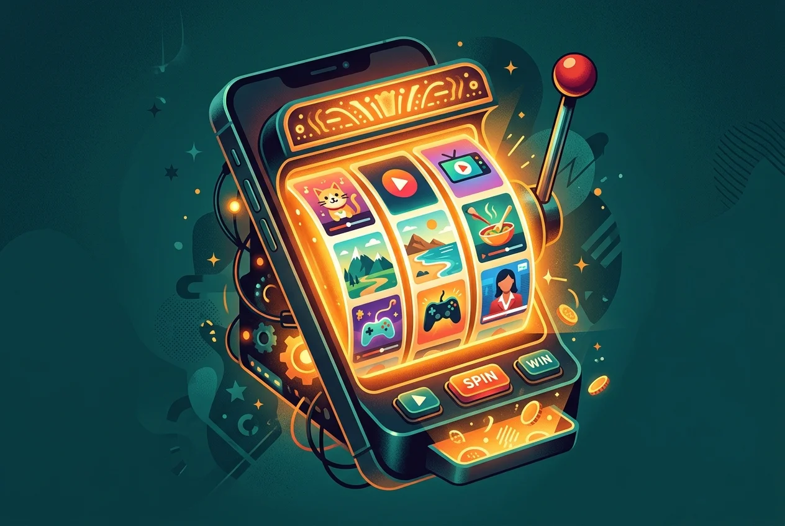
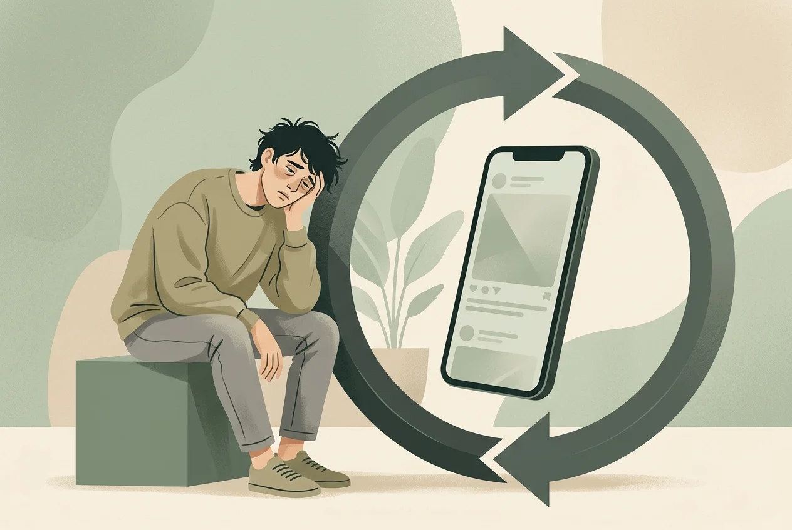

Instagram Reels Compulsion: Why You Can't Stop Swiping
The psychology behind why your thumb keeps moving—and the one design trick that breaks the loop.
You opened Instagram to reply to a DM. That was thirty-five minutes ago. Somewhere between a golden retriever in a cowboy hat and a pasta recipe you'll never make, you stopped replying and started swiping. Your neck is stiff. Your eyes are dry. The DM sits unanswered at the top of your inbox, buried under an avalanche of Reels you can't remember watching.
You lock your phone, set it face-down on the table, and pick it back up eleven seconds later. Not because you decided to. Because your thumb decided for you.
Instagram Reels addiction is the compulsive, often involuntary pattern of swiping through short-form video content long past the point of enjoyment or intention. It's not a clinical diagnosis, but the behavioral pattern is real and measurable: a 2025 meta-analysis of 71 studies covering nearly 100,000 participants found that compulsive short-form video use is associated with reduced attention, lower inhibitory control, and increased anxiety. You're not weak for getting stuck. The feed was engineered to keep you there.
The Slot Machine in Your Pocket

Every time you swipe up on a Reel, you're pulling a lever. You don't know what's coming next—a workout tutorial, a political hot take, a cat falling off a counter in slow motion. That unpredictability is the point. Psychologists call it variable-ratio reinforcement, and it's the exact mechanism that makes slot machines the most addictive form of gambling.
Your dopamine system doesn't fire in response to pleasure. It fires in response to prediction error—the gap between what you expected and what you got. Instagram's recommendation engine is a prediction-error machine, calibrated across billions of interactions to serve you content that's just surprising enough to keep your thumb moving. Each swipe is a micro-bet. Sometimes you get a five-second throwaway. Sometimes you get something that makes you laugh so hard you screenshot it. You never know which, so you keep pulling.
The design amplifies this. Full-screen immersion. Auto-play with no pause between clips. No visible timeline, no progress bar, no sense of how deep you've gone. Every friction point that might prompt you to stop has been carefully removed. This is the same doomscrolling mechanic that drives every infinite feed—Instagram just wraps it in vertical video and a faster dopamine cycle.
What Happens to Your Brain on Reels
The damage isn't hypothetical. An EEG study on short-form video users found that people with higher addiction tendencies showed reduced theta brainwave activity in the prefrontal cortex during attention tasks. Theta waves are the neural signature of focused attention and cognitive control. When they weaken, you lose the ability to concentrate on anything that doesn't deliver instant stimulation.
This is why, after a thirty-minute Reels session, reading an email feels like wading through concrete. Your brain has been sprinting through micro-rewards at fifteen-second intervals. A four-paragraph email with no visuals and no punchline registers as neurologically boring. It's not that the email changed. Your baseline did.
The meta-analysis found that attention (r = -.38) and inhibitory control (r = -.41) showed the strongest negative associations with short-form video use. Translation: the more you swipe, the harder it becomes to stop swiping—and the harder it becomes to focus on anything else. It's the same cognitive pattern behind TikTok brain rot, and Reels delivers it through an identical mechanism with a different logo.
The Compulsion Loop vs. Actual Enjoyment

Here's the uncomfortable question: when was the last time you closed Instagram and felt good?
Not entertained. Not distracted. Actually good—energized, inspired, glad you spent that time the way you did. If you're honest, the answer is almost never. Compulsive Reels use doesn't feel like enjoyment. It feels like being stuck. You swipe past content you don't care about, waiting for the one that justifies the last ten minutes, and when it arrives, you use it as permission to spend ten more.
This is the distinction between wanting and liking. Your dopamine system drives wanting—the urge to seek, to swipe, to check. But wanting and liking are neurologically separate. You can desperately want to keep scrolling while simultaneously feeling drained, anxious, and vaguely guilty. That mismatch—the hand keeps moving while the mind knows it should stop—is the hallmark of compulsive behavior.
When this pattern bleeds into your mornings, it gets worse. Swiping through Reels before your first coffee hijacks your cortisol awakening response, setting your anxiety baseline higher for the entire day. The content doesn't even have to be negative. The rapid-fire stimulation alone is enough to put your nervous system on alert before you've fully woken up.
Breaking the Swipe Reflex
The instinct is to delete Instagram. Go cold turkey. But you've probably tried that. You reinstall it within a week because Instagram isn't just Reels—it's how you message friends, follow events, keep up with people you care about. Deleting the entire app to escape one feature is like selling your car because the radio won't turn off.
What actually works is friction. Not a wall. A speed bump.
The compulsion loop relies on zero delay between the urge and the action. You feel the pull, your thumb taps the icon, and you're inside the feed before your prefrontal cortex has time to weigh in. If you insert even a five-second pause—a single conscious breath between the impulse and the app—you give your rational brain a chance to override the reflex. That tiny gap is where intention lives.
This is the same principle behind digital minimalism: you don't have to quit technology. You just need enough friction that opening the app becomes a choice instead of a reflex. Some people move Instagram off their home screen. Some set a daily reminder. Some use one of the many app blockers for iPhone designed to create that pause.
Sip & Scroll takes this a step further. When you open Instagram—or TikTok, YouTube Shorts, whatever pulls you in—it asks you to take a sip of water and snap a quick selfie. That's it. Five seconds of intentional friction. Then you get up to 30 minutes of unblocked access. When the session ends, another sip to continue—or you walk away. No punishment, no lockout, no guilt. Just a small ritual that turns an automatic reflex into a conscious decision. And you stay hydrated while you're at it.
You can't out-willpower an algorithm trained on billions of behavioral data points. But you can build a boundary between the urge and the feed. That boundary doesn't have to be a fortress. It just has to be there—a pause long enough for your brain to ask, do I actually want this right now?
The Reels will still be there when you come back. The question is whether you come back on autopilot, or on your terms.
Break the swipe reflex
A sip of water between you and the algorithm. One pause, one choice, one shift.
Download Sip & Scroll